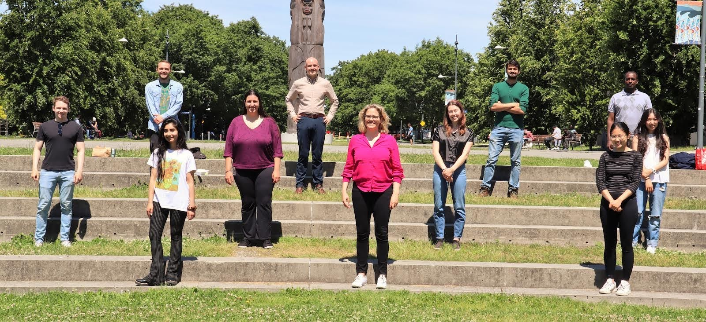

Co-op 2: Research with UBC Physics and Astronomy
Over the summer of 2021 I decided to treat my love for Physics by taking a research opportunity at the University of British Columbia.
I joint the Micheal Smith Labs at UBC in May, under the professor Dr. Sabrina Leslie, in hopes to dig deeper into the world of Physics research, and learn something completely outside of my then area of expertise.
Into the Technical side ...
The research involved working with flourecantly tagged molecules, and studying their structures. The gist of it was: They would tag the ends of the molecules, put it under a microscope, and then, shoot lasors at it! We would record the flouresance that we see on Matlab, and then analyse the data there.
The best part about working with this lab was that my team only had three people, my supervisor, a PhD student, and me. This meant that all of us had to be able to perform any part of the research process independantly, and so I got to learn and perform all of the tasks available. Starting from preparing our samples, to setting up and opperating the lasor, to analysing the data and presenting it. My Matlab skills improved exponentially, I learnt many new data visualization tools in order to try to interpret our findings.
They also let me carry out independant research of my own interests whenever something I was curious about came up. And some of that independant research lead to fixing old data that they took years ago when I discovered a disregularity or mistake.
Through this work term I really got to feed the curious Researcher inside me, and made me love Physics even more!